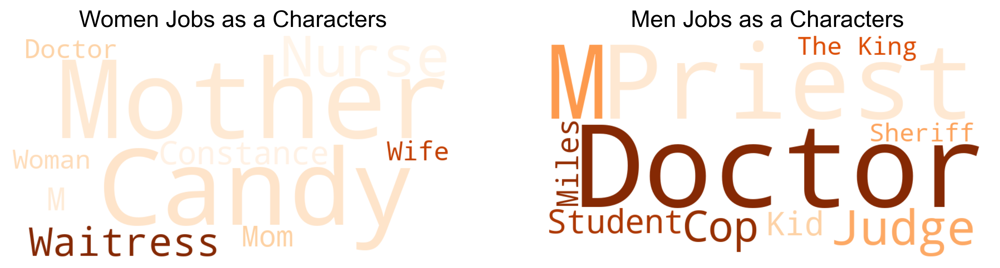
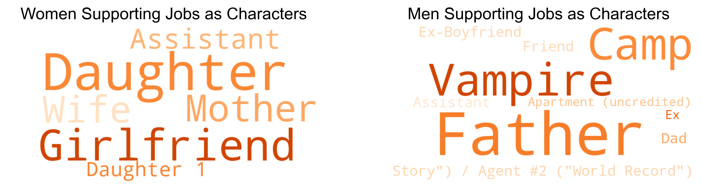
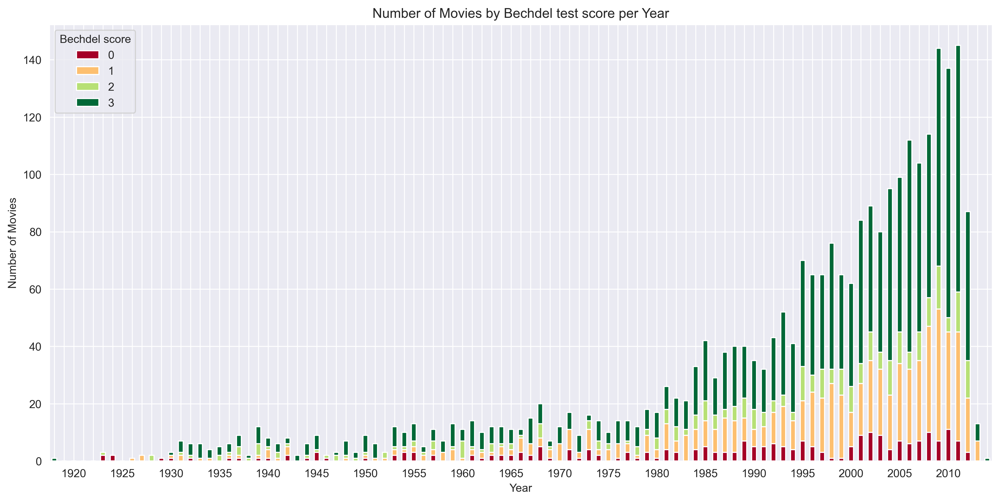

Quality of the increase
Now is time to evaluate the quality of this encouraging evolution of women involved in the film industry!Actors age
First, we will look at the evolution of the age of male and female actors. Why? Simply because young women are generally prefered than old women, while we are supposed to appreciate men at every age.Well well well... It seems pretty clear that there is no evolution among the years, but that the difference between genders stays tremendously stable!
Actors roles
We want to plot the main roles of the characters in wordclouds: one for the men and one for the women characters.Note that most of the characters collected in the dataset are only mentioned by name, and not by role. Thus, we will only plot the roles of the characters that have a role.

After plotting the roles in wordclouds, we want to plot the roles related to other roles (for instance: in "Mother's girlfriend", we will represent "Girlfriend")

Bechdel test
In order to analyze the quality of the increase in another way, we used the data from the Bechdel test (see website here). The Bechdel was originally invented in 1985 in a comic strip by Alison Bechdel and tests whether a movie passes the 3 following conditions: a) The movie has to have at least two women in it, b) who talk to each other, c) about something other than a man. Here is the original illustration:
This results in a score between 0 and 3, depending on the number of tests the movie passes. It is considered to be a basic standard for minimal women's representation in movies and also includes some women's theorized stereotypes such as the Smurfette principle, which designs the fact that in many stories, the woman is the exception and exists only in reference to the men. Even though this test is very limited, it offers great insight on the role and representation of the women in any movie.
Thus, we merged our data with the Bechdel test data (which is entered by hand, where movies are evaluated by individuals) and we plotted the evolution of the Bechdel score over the years.
